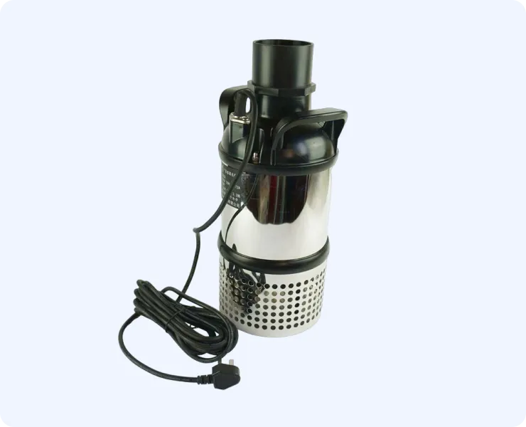

Насосы для пруда
Насос прудовый KF-26000, 26000 л/час, 225 Вт, макс.напор 4м
Цена и наличие
- 1 шт.943,5 BYN / шт.В наличии
Данные на 23.11.2026.
Характеристики
- Тип насоса
- прудовый
- Производительность
- 26000 л/час
- Напор
- 4м
- Мощность
- 225 Вт
- Габариты
- 197*197*486 мм
- Размер коробки
- 290*230*510 мм
- Диаметр присоединения
- 75 мм
- Перекачивает крупные частицы грязи
- до 7 мм
- Номинальная мощность
- 220 В / 50 Гц
- Страна производитель, бренд
- Jebao, Китай
Описание
KF-26000 - насос для пруда.
НАСОС ДЛЯ ПРУДА JEBAO KF-26000, 26000Л/Ч, 4М НАПОР, 225ВТ, В КОРПУСЕ ИЗ НЕРЖ. СТАЛИ Серия насосов KF была специально разработана для подачи большого объема воды. Характеристики насосов этой серии позволяют устанавливать их в тех случаях, когда необходимо создать масштабные водные объекты такие как, большой ручей или водопад, также их можно использовать для подачи прудовой воды к фильтрационным системам. Также данные насосы отлично подойдут для циркуляции воды в прудах с карпами КОИ, т.к. они перекачивают большой объем воды при низком энергопотреблении. Все насосы серии KF имеют номинальную мощность 220 В / 50 Гц , кабель длинной 10м. Насосы являются погружными. Все насосы могут использоваться в плавательных прудах.